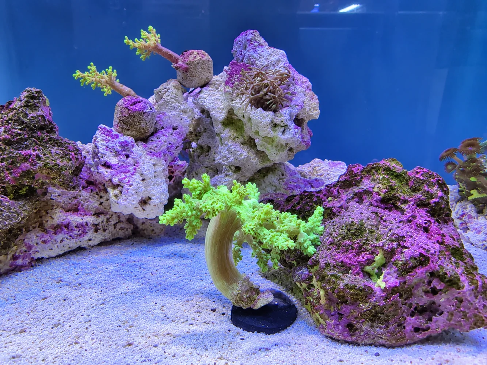

O projeto
O Home Assistant funciona como ponto central para reunir estados, dashboards e automações do ambiente doméstico e de laboratório. A abordagem privilegia painéis simples, práticos e fáceis de consultar no dia a dia.

Áreas em utilização
O que está integrado
- Controlo básico de iluminação e tomadas.
- Leitura de estados do ambiente e sensores.
- Organização por áreas, como casa, aspiradores e UPS.
- Integração local com MQTT e dispositivos Zigbee compatíveis.
- Consultas rápidas para monitorização doméstica e de laboratório.
Exemplos visuais

Automação aplicada à aquariofilia
Um aquário mostra bem a utilidade de uma automação discreta: não precisa de chamar a atenção, mas trabalha todos os dias. A iluminação, por exemplo, deve seguir horários consistentes. Com tomadas ou relés adequados, o Home Assistant permite programar quando cada periférico liga ou desliga, consultar o seu estado e ajustar os horários sem mexer em temporizadores físicos.

Porque não usar apenas um temporizador mecânico?
Um temporizador mecânico convencional depende do seu mecanismo e da alimentação elétrica. Se a energia falhar, alguns modelos podem ficar desfasados da hora real, alterando involuntariamente o período de luz. Numa automação baseada na hora do sistema, é possível fazer uma verificação ao arranque: se a energia regressar durante o período programado, a luz deve estar ligada; se regressar fora desse período, deve permanecer desligada.
Há, contudo, uma condição: a rotina tem de estar preparada para reconciliar o estado dos dispositivos depois do arranque, e o Home Assistant, a rede e os módulos de controlo precisam de voltar a comunicar. O simples facto de existir um horário não garante essa recuperação. É esse cuidado com os detalhes que transforma uma programação básica numa automação fiável.
Mais do que iluminação
- Programação de tomadas e iluminação por horários consistentes.
- Consulta remota de estados e ajuste de rotinas conforme a necessidade.
- Monitorização de sensores e avisos em caso de valores fora do esperado, quando disponíveis.
- Separação entre comandos de conveniência e equipamentos essenciais, que devem ter proteção adequada e funcionamento seguro.
A automação ajuda na rotina diária, mas não substitui os sistemas de segurança, a alimentação de emergência nem os controladores dedicados de equipamentos críticos.
Abordagem
- Criar dashboards claros, com informação útil e sem excesso de complexidade.
- Integrar primeiro as funções essenciais e só depois acrescentar novas áreas.
- Usar a plataforma como apoio à monitorização do laboratório e de alguns equipamentos domésticos.
As capturas apresentadas são ilustrativas e mostram apenas a organização geral do ambiente.